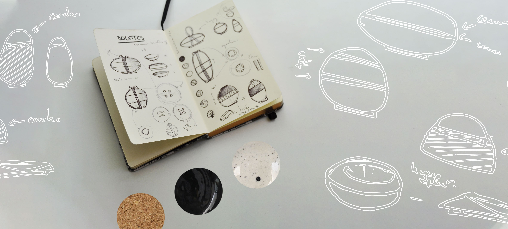
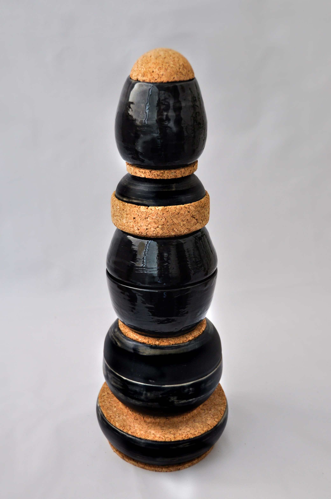
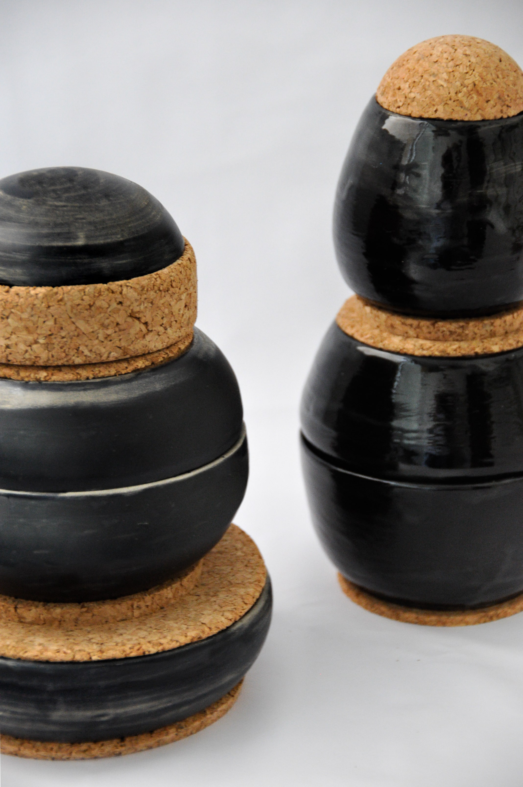
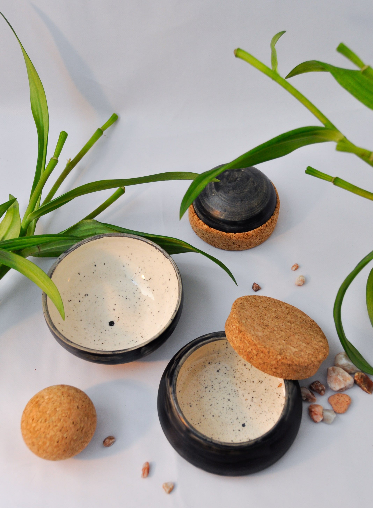
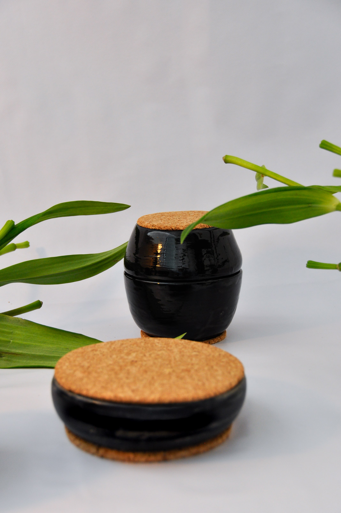

Bolettes - Diseño de una colección de envases en cerámica y corcho.
________________________________________________________________
●
En pleno debate sobre la necesidad de reducir y/o eliminar el uso de plástico de nuestras costumbres de consumo,
este proyecto "Bolettes" es un experimento de vajilla con las funcionalidades del "Tupperware"
apta para el uso en microondas, cosa que por ejemplo los bentos de acero (que es la opción
más sostenible por su resistencia y su reciclabilidad) no permiten.
La cerámica es un material que se usa desde tiempos inmemoriales para la conservación de alimentos
y líquidos y que además tiene múltiples características térmicas como la conservación
del frió o del calor, sonoridad, un tacto y que es un material al que
puede dar casi todas las formas imaginables además de poder
ser trabajado de manera artesanal como industrial.
●

●

____________________________________
Bolettes esta planteado para que un mismo contenedor pueda servir
para varios tipos de alimentos y líquidos, y que además sean apilables para
una economía de espacio. Con sus tapas de corcho, que dejan parcialmente
respirar su contenido, se obtiene un aspecto artesanal y natural
basado en el contraste de colores y dureza de los materiales,
dándole así un toque más artístico a nuestras cocinas.
●


●
●
